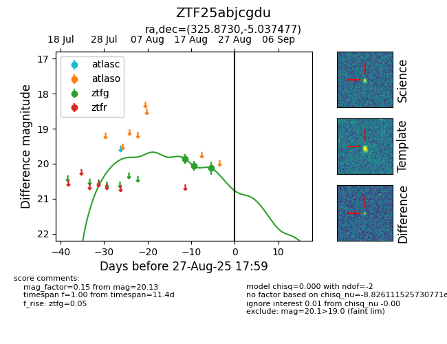

Target ZTF25abjcgdu at 2025-08-27 17:59, see:
FINK: fink-portal.org/ZTF25abjcgdu
Lasair: lasair-ztf.lsst.ac.uk/objects/ZTF25abjcgdu
ALeRCE: alerce.online/object/ZTF25abjcgdu
alt names
ZTF25abjcgdu (ztf,fink)
coordinates:
equatorial (ra, dec) = (325.8730,-5.03748)
galactic (l, b) = (50.5789,-40.15197)
photometry
last ztfg=20.13
3 ztfg detections
